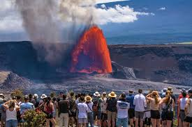

<!DOCTYPE html>
<html lang="en">
<head>
    <meta charset="UTF-8">
    <meta name="viewport" content="width=device-width, initial-scale=1.0">
    <title>Photo Tour: A brief description of the project</title>
    <link rel="stylesheet" href="style.css">
</html>

<body> 
    <main>
    <h1> Volcano National Park</h1>
    <p> Volcano National Park is a stunning natural wonder located on the Big Island of Hawaii It is home to two of the world's most active volcanoes, Kilauea and Mauna Loa, which have been erupting for centuries. Visitors can explore the park's unique landscapes, including lava fields, steam vents, and volcanic craters. The park also offers hiking trails, scenic drives, and opportunities to witness the incredible power of nature up close.</p>
    
    <p> One of the most popular attractions in Volcano National Park is the Kilauea Visitor Center, where visitors can learn about the park's geology, history, and culture. The center also offers ranger-led programs and guided hikes to help visitors explore the park's unique features.</p>
    </main>
</body>

<footer>

    <p>Click here to see the other destinations:</p>

    <li><a href = "PhotoTourProject.html"> Home Page</a></li>
    <li><a href = "Hilo.html"> Hilo</a></li>
    <li><a href = "Kona.html"> Kona</a></li>
    <li><a href = "Mauna Kea.html"class="activate"> Mauna Kea</a></li>
    <li><a href = "Volcano-National-Park.html" class="active">Volcano National park </a></li>
    <li><a href = "Waipio-Valley.html"> Waipio</a></li>

    <p>Copyright&copy; 1875 by Amlek M.</p>
</footer>